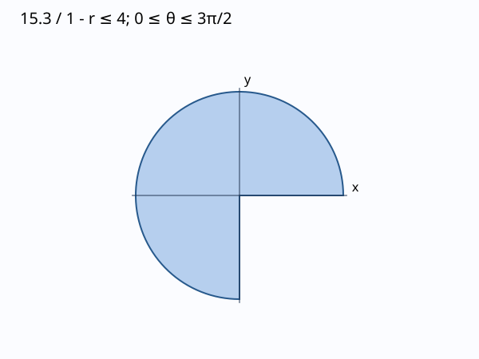

문제 요약
반지름4인 원판에서 제4사분면을 뺀 영역에 대해 직교좌표와 극좌표 중 편리한 것을 골라 일반 함수 f의 적분을 세워라.

힌트. 원을 극좌표 경계로 바꾸고 \(dA=r\,dr\,d\theta\)를 사용한다.
해설.
원형 경계는 극좌표에서 상수 반지름이 된다.
영역은 \(x^2+y^2\le16,\ 0\le\theta\le3\pi/2\)이다.
최종 답. \[\int_0^{3\pi/2}\int_0^4f(r\cos\theta,r\sin\theta)r\,dr\,d\theta\]
검산·주의점. 극좌표 경계를 직교좌표에 대입하고 야코비안 r을 확인했다.
Problem summary
A radius4 disk with the fourth quadrant removed: choose convenient coordinates and set up the integral of an arbitrary f.
Hint. Express circular boundaries in polar form and use \(dA=r\,dr\,d\theta\).
Solution.
Circular boundaries give simple radial limits.
The region is \(x^2+y^2\le16,\ 0\le\theta\le3\pi/2\).
Final answer. \[\int_0^{3\pi/2}\int_0^4f(r\cos\theta,r\sin\theta)r\,dr\,d\theta\]
Check and conditions. The polar boundary was substituted into Cartesian equations and the Jacobian r was checked.